Made in Detroit · Hello 👋
Trippy Wire™ is fiber-optic light. The glowing part carries no electricity and makes no heat — so it goes in water, on people, and around corners that LED tape gives up on. Then it vanishes completely when you switch it off.
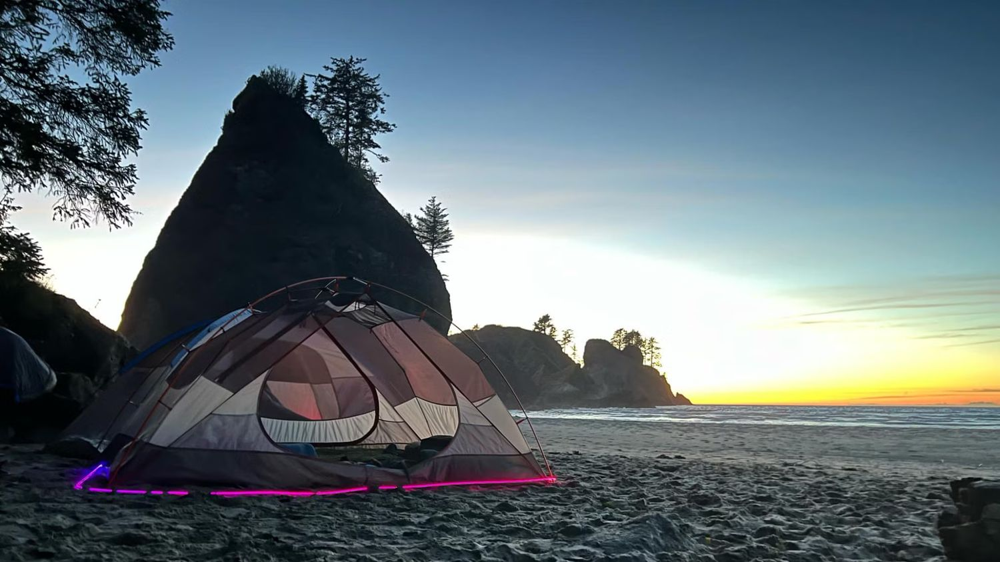
Two illuminators, one run of Trippy Wire, no power drop. Second Beach, Olympic National Park.
⭐ Features across all kits
IP67 rated, top to bottom. Housing, battery, Trippy Wire. Rain, splash zones, and full submersion.
Trippy Wire is glass and polymer. No current, no heat. Touch it, wrap it around someone, cut it with scissors while it's running.
No special tools, no drivers to spec, no power drop. Everything you need to light something up is in the box.
Clear and unnoticeable when off. A saturated, continuous stroke of color when on.
Yes, that's a real dunk test
This is the whole pitch in one clip. The illuminator is sealed and submersible. Trippy Wire doesn't care about water at all, because there's nothing electrical in it to care.
For long-term installs we still recommend keeping the illuminator somewhere dry and letting the Trippy Wire do the swimming — but that's a maintenance preference, not a safety one.
😎 What makes us different
We're not going to out-lumen an LED. What we do instead is go places tape can't, and do a thing in motion that point-source light physically cannot reproduce.
| Feature | Trippy Wire™ | LED tape | Neon (glass) | EL wire |
|---|---|---|---|---|
| Brightness | Moderate | High | Moderate | Low |
| Flexibility / bend radius | Excellent | Good | Poor | Good |
| Profile | 1 mm | 8–12 mm | 15 mm + | 2–5 mm |
| IP67 submersible | Yes | Conditional | No | No |
| Safe to touch or cut live | Yes | No | No | No |
| Heat at the light line | None | Yes | Yes | Low |
| Energy draw | Very low | Low | High | Low |
| Durability | Excellent | Good | Poor | Fair |
| Maintenance cost | Low | Moderate | High | Moderate |
| Invisible when off | Yes | No | No | Partial |
| Motion smear | Yes | No | No | No |
The party trick
Move an LED strip fast and you get a dotted line, because it's a row of points. Move a lit run of Trippy Wire and you get an unbroken ribbon, because the whole length is emitting at once.
This is not a camera effect. What you see in the clip is what your eye sees standing there. It's the reason the product reads so well on performers, props, and anything handheld.
It also means guests film it. Every single time.
🎨 Colors
Red, green, and blue — one color per illuminator. Light one end of a run and you get that color. Put a second illuminator on the other end in a different color and the Trippy Wire mixes the two along its length. No extra hardware, no controller, just optics doing what optics do.
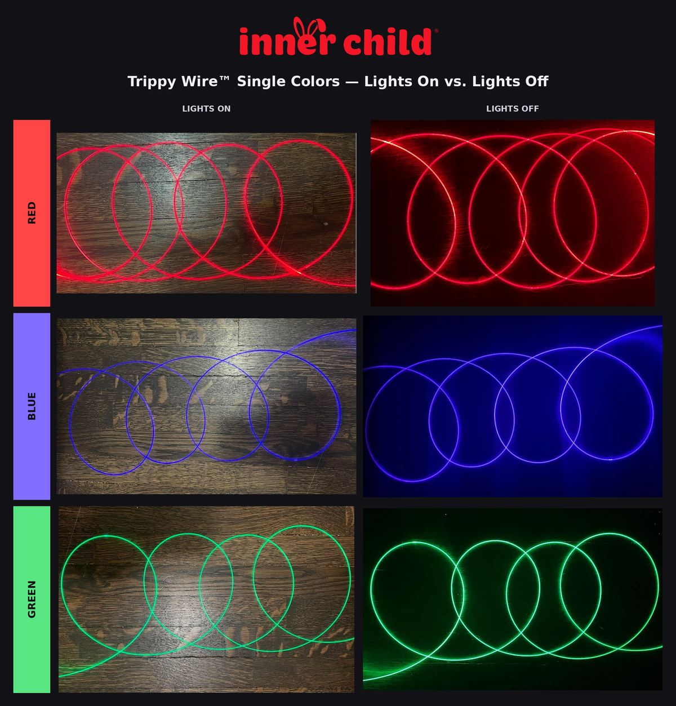
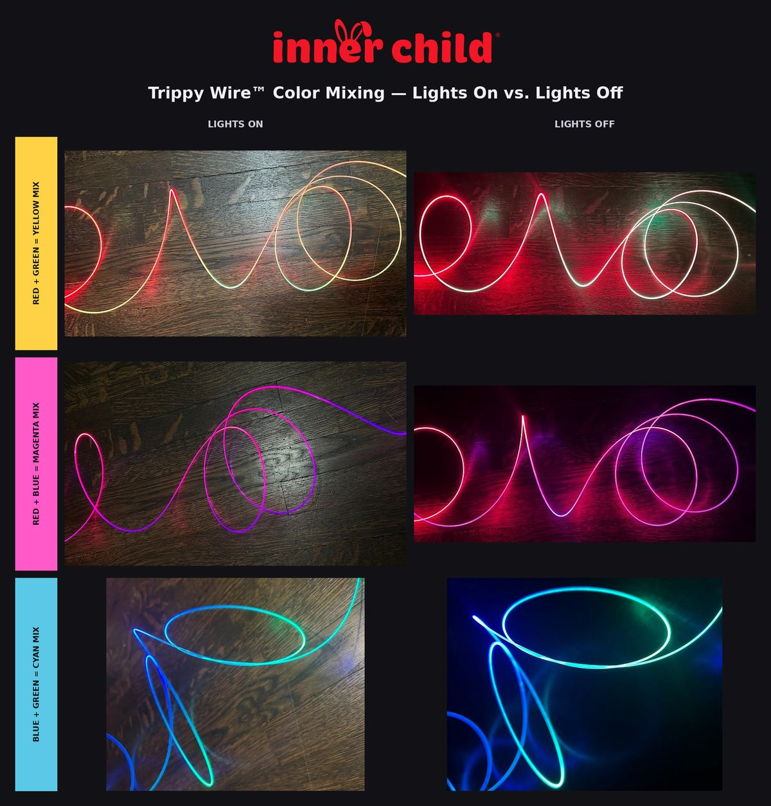
🧵 Trippy Wire™
Every grade is 1 mm PMMA side-glow, non-conductive, and user-replaceable — so a damaged run is a two-minute swap rather than a fixture replacement. Pick the grade by what the light has to do.
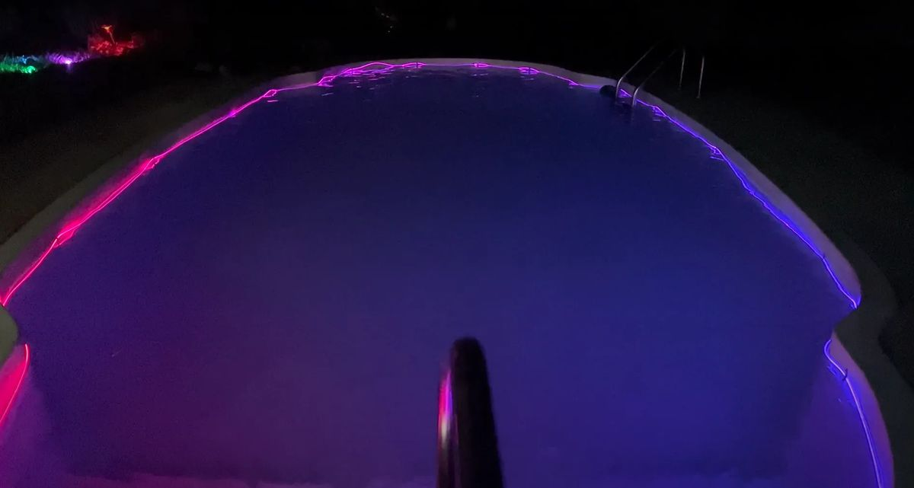
Even gradient when lit from both ends, and brighter than refractive. The one for static installs and long runs — this pool is a single run, magenta at one end, blue at the other.
Shifts color with viewing angle and with how it's bent. Lit from both ends in two colors, one run reads differently to every person in the room. The one for handheld, worn, and moving work.
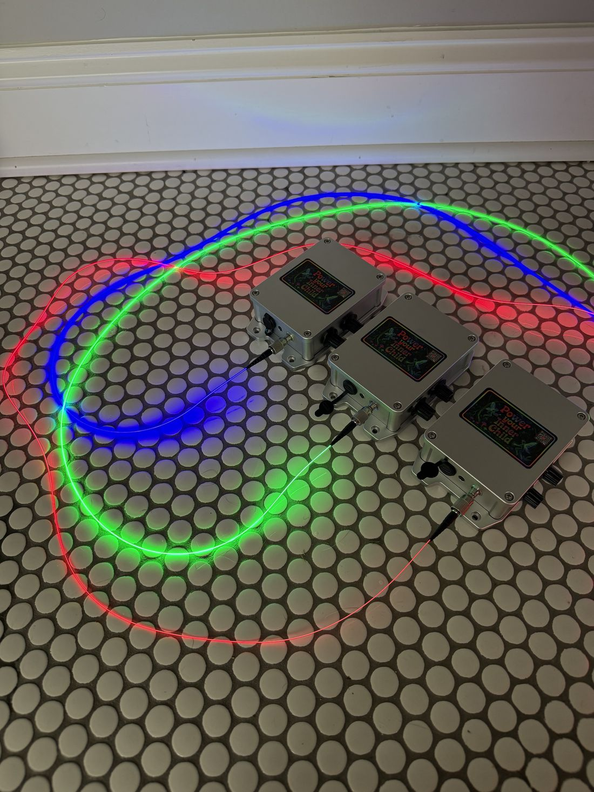
The brightest Trippy Wire we offer, with an even gradient from both ends and the strongest motion smear. Shown here on three units — one per color.
📦 The kit
Power, driver, and light source all live inside one sealed aluminum box roughly the footprint of a soda can. A deployment needs one mounting point and no cable run.
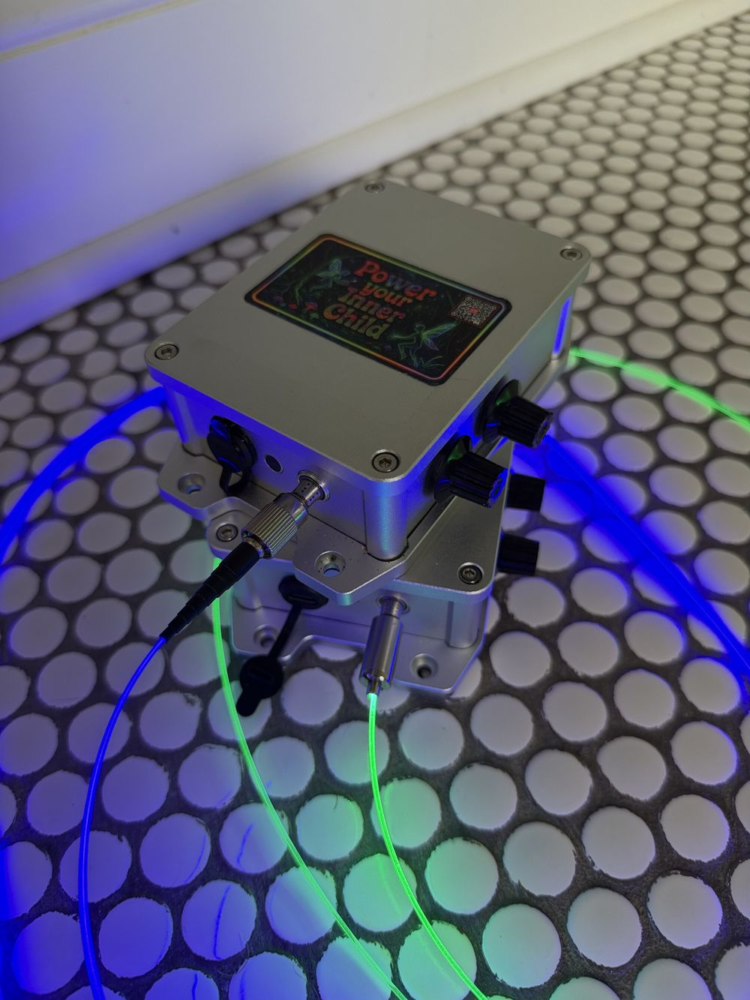
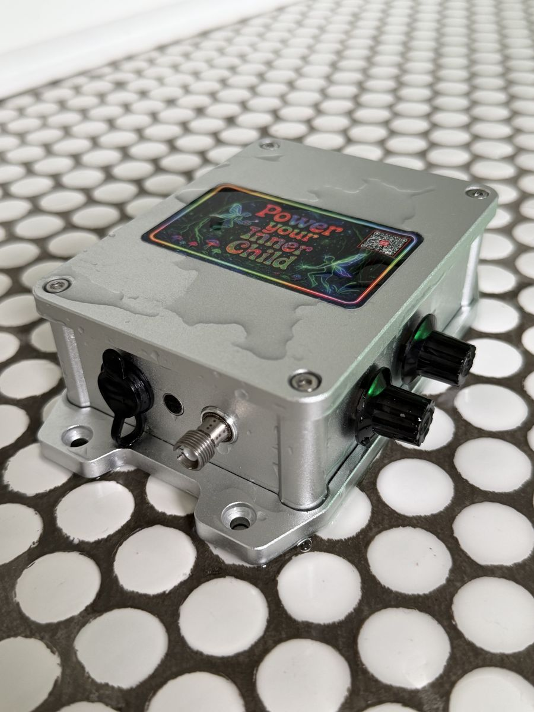
| Illuminator | Wavelength | Runtime |
|---|---|---|
| Blue | 450 nm | ~40 hours |
| Red | 635 nm | ~19 hours |
| Green | 520 nm | ~9 hours |
Our favorite pairings: red + blue, and green + blue.
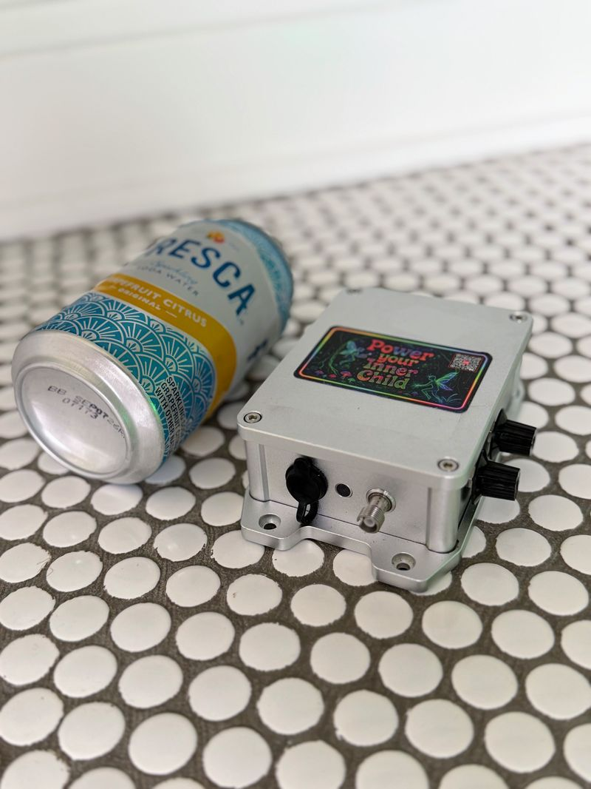
Size of a can. Hides behind a set piece, inside a prop, under a rail, or in a performer's pack.
🌙 In the wild
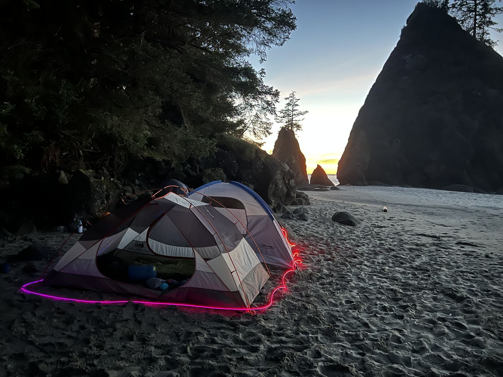
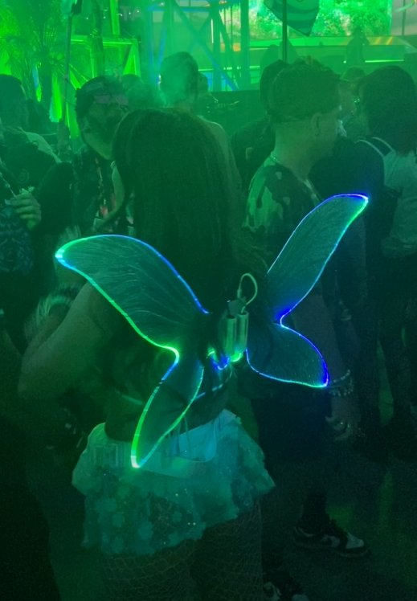
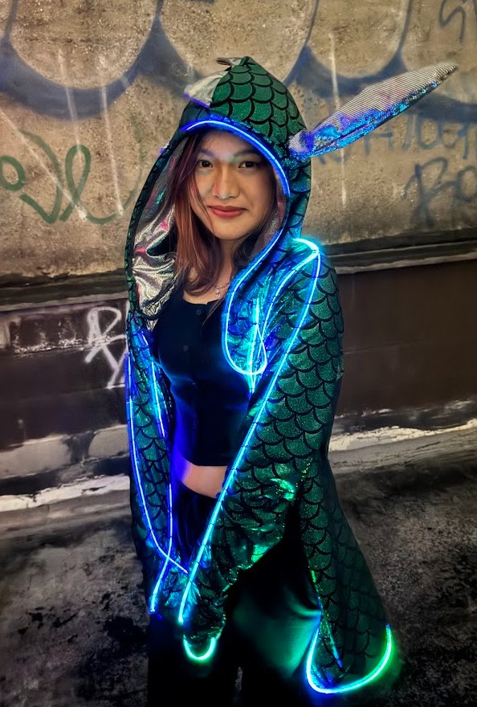
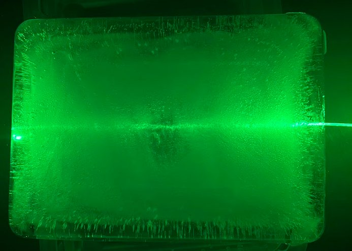
🔮 Where it fits your work
The use cases don't really end — every time we show this to someone new they think of one we hadn't. These are just the jobs we get asked about most. Open whichever is closest to yours.
❓ Questions we actually get
At the light line, yes — unusually so. Trippy Wire carries no current and produces no heat. It can be handled, submerged, wrapped around a person, or cut with scissors while the system is running. Where a production would normally need a power drop, a driver, and a hazard assessment, this needs a mounting point.
Ordinary product sense still applies: keep it away from children under six, and use it for what it's for.
Short answer: no, and here's exactly why, because this is the question that decides whether a project moves.
The light source inside the housing is a laser diode. It is fully enclosed in a sealed metal housing behind isolation glass, and light exits only through the threaded output port. There is no accessible beam at any point in normal operation. Trippy Wire emits diffuse light along its length — it is not a directed beam and cannot be pointed at anyone.
The distinction that matters legally, and at nearly every venue, is between an enclosed source and a laser pointer. This is the former, in the same sense that a laser printer is. Most venues, festivals, and municipalities permit it with no special filing.
One honest exception: a small number of promoters — Insomniac events among them — apply a blanket prohibition on any laser-based product regardless of enclosure. We flag it up front so it gets checked during scoping instead of discovered on load-in.
Not in direct sun. It's an accent light for low-to-no ambient light. It holds up well in a normally lit interior — that's the left column of the color photos above — but it isn't a daytime signage product.
Trippy Wire, absolutely — it's completely happy underwater indefinitely. The illuminator housing and battery are submersible too, but for a permanent install we'd rather see the illuminator somewhere dry and only the Trippy Wire in the water. That's about long-term serviceability, not safety.
Brightness levels and modes are on the unit today. Full RGB mixing in a single channel and wireless control are in development. If a project needs it on a specific timeline, tell us — that conversation changes our roadmap.
Roughly 10,000 operating hours. Trippy Wire is the consumable, and it's user-replaceable and cuttable on site, so a damaged run is a swap rather than a repair.
Yes, and it's most of what we do. Housing form factor, mounting, run length, battery capacity, and color pairings are all open. Tell us the constraint — waterproof, tiny, worn, 12-hour runtime — and we'll build to it.
Please. It genuinely does not photograph the way it looks, and the motion behavior has to be seen moving in a room. We're in Detroit, and anywhere in southeast Michigan is a same-day trip rather than a shipped box.
Next step
We'll bring a working unit to you and run it in your space. Bring production, bring safety, bring the designer who'll have to draw it — the objections are easier to answer with the thing switched on.